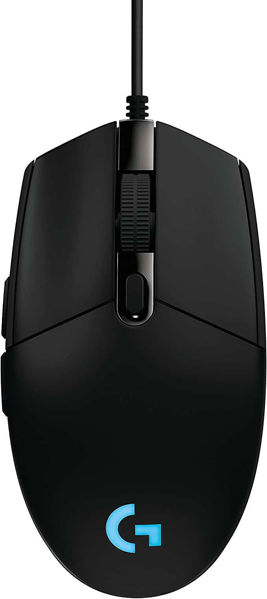

periféricos
Esse tipo de dispositivo é responsável em transmitir e receber informações do computador.
Os periféricos podem ser divididos em 3 tipos diferentes:
Periféricos de entrada: É responsável em transmitir as informações para o computador. Por exemplo: mouse, teclado, microfone...
No teclado você digita as informações, que por sua vez, são interpretadas pelo seu computador. Ou seja, os dados digitados irão entrar no computador. Desta forma, podemos dizer que ele é um periférico de entrada. Com o mouse também se aplica este mesmo conceito. Ao clicarmos ou arrastarmos o mouse para alguma direção, estamos enviando informações para dentro do nosso computador.
Periféricos de saída: É o responsável em receber as informações do computador. Por exemplo: monitor, impressoras, caixa de som, projetor de vídeo...
Periféricos de entrada e saída: Tratam-se de dispositivos de entrada e saída ao mesmo tempo. Esse tipo de dispositivo é responsável em transmitir e receber informações do computador. Por exemplo o Pen Drive.
Mini teclado bluetooth com touchpad tablet acessórios para computador periféricos compatíveis com android ios teclado windows
R$: 165,99
Headphone Fone de Ouvido Havit HV-H2232d, Conector 3.5mm, HAVIT, HV-H2232d

R$: 569,00
Logitech Mouse para jogos G203 Prodigy RGB com fio – Preto

R$: 499,90